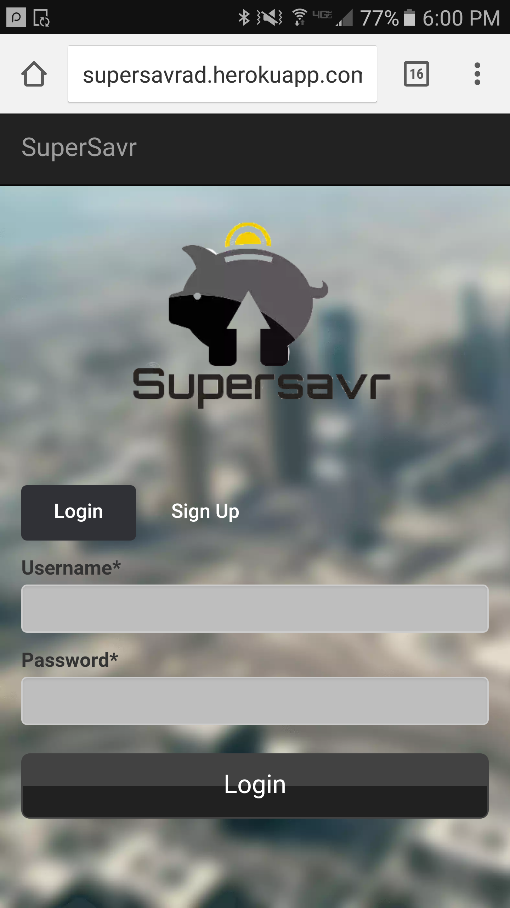

In UCSD's CSE 170, Interaction Design, my team was given a design brief around the topic of resolutions. We were interested in the ideas of thrift and saving as resolutions, and immediately dove into a process of needfinding, through ethnographic field study and contextual interviews.
Pieces of an early stage prototype.
I observed and interviewed a variety of people doing an activity in attempt to track and/or save money, striving to document the successes and pain points of marginalized, extreme, and everyday users to ultimately achieve a more inclusive design. Taking cues from the processes, services, and applications my interviewees used comfortably, and seeing opportunities in the pain points and breakdowns I observed, we moved to the next step in our process.
Yielding considerably to our limited time and resources, my team decided to focus our efforts on users whose needs revolved around saving cash and efficiently tracking cash disuse. Our end goal would be to develop a simple, intuitive, efficient mobile web app for users to record cash savings and set spending goals.
Brainstorming, storyboarding, and paper prototyping comprised the next phase of our journey. Example personas include Mike, a tech-savvy 19 year old living on student loans, Marla, a 57 year old corporate manager wanting to retire, and who has limited comfort with new technologies, and Joseph, a 30 year old mechanic paid in cash, saving for a new car. People who all have their own reasons for dealing in cash, and their own motivations to save it. We wanted to save them the trouble of paper bookkeeping, to allow them to retain a level of independence from corporate banking, and to provide them a visual reminder of their savings goals.
Later user tests in the field.
Storyboards featured stickmen foregoing Starbucks and logging cash savings, sad baristas and fat wallets, with our app in the midst of it all.
An A/B test yeilding a surprising result.
I delivered a number of full paper prototypes, engaging in a cycle of prototyping, conducting user tests, and evaluating the prototypes against a scale grounded in Neilson's heuristics.
Soon it was time for development. Here my contribution was mostly HTML and CSS, letting Cody deal in his beloved JavaScript almost unperturbed. After development, racing against the clock, we ran more user tests and a pair of A/B tests on pages of critical functionality.
I learned a lot from this project. The cycle of prototyping was extremely helpful, and I realized my original design was solidly amiss. Some users found themselves confused as they tried to complete tasks assigned to them, others simply did not like the design. Unfortunately my phone was stolen since the project, so I don't have photos of most of the prototypes, but they did (usually) become progressively less bad. By the final prototype, most users we tested were able to navigate and complete tasks fairly quickly and without mistakes. Due to time constraints, we couldn't optimize styles for desktop, but on your mobile device, please visit supersavr.herokuapp.com for the final result. Thanks for reading!

Styles I would've applied if we'd had more time.
Our final product.
Photographer's Portfolio
This project was for me an exercise in visual design, and I became much better versed in CSS as I completed it. I wanted to experiment with symmetry and asymmetry, and learn to use color sparingly. (The original version of the site you're on was bright purple.)
Simple navigation, substantial negative space.
The site is functional, but not online. I'd be glad to show it in person.
I wasn't as satisfied with this page. I felt it didn't quite cohere to the style I was attempting. To correct this, next I would experiment with the blog's border, and possibly split the background image at some 3:7 ratio.
Awesome. I Have It.
Your couch.
I'm a cool paragraph that lives inside of an even cooler modal. Wins!